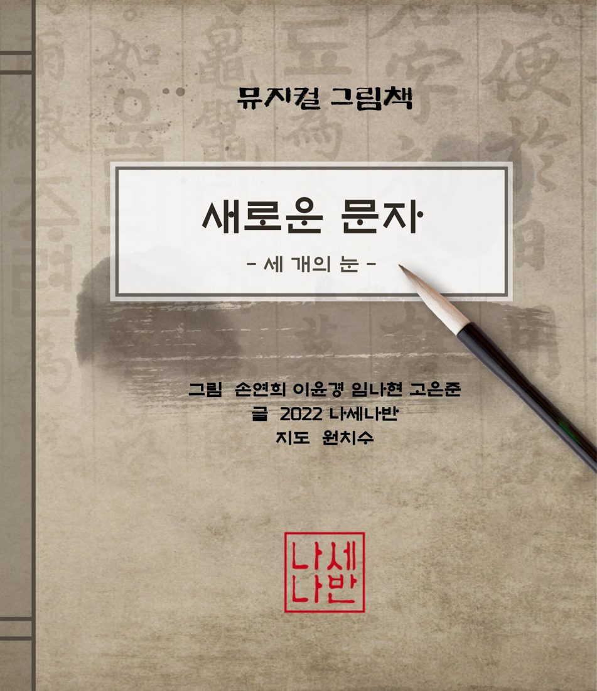
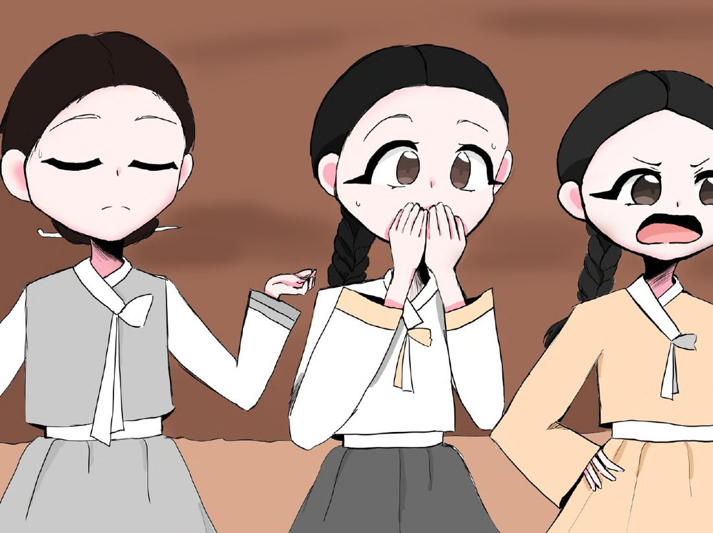
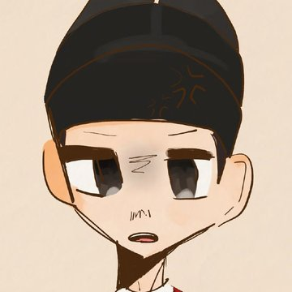
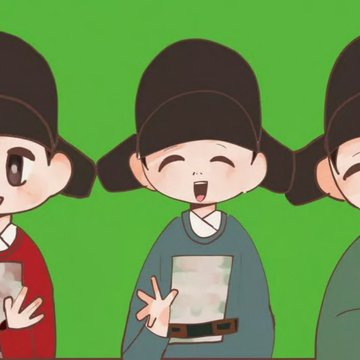
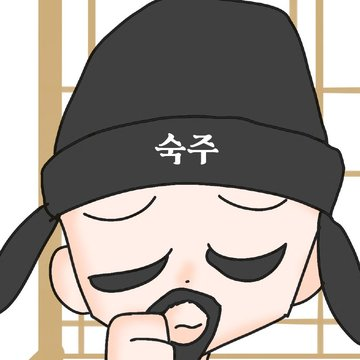
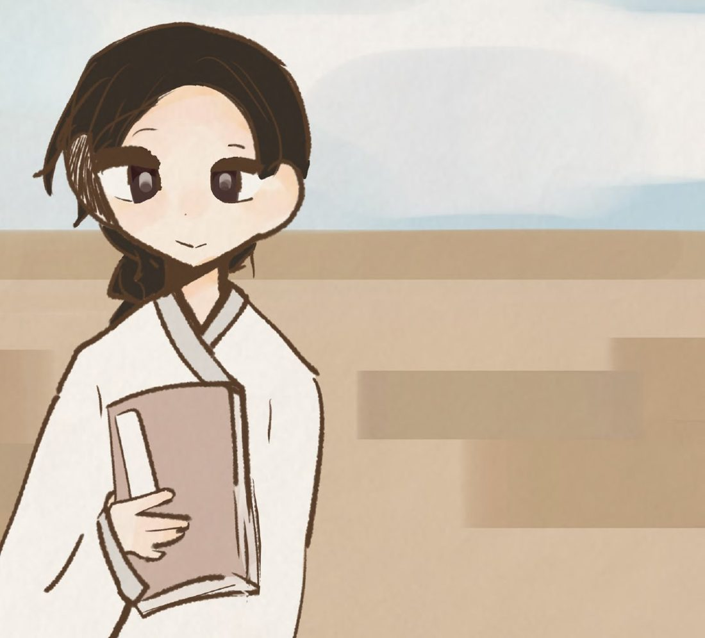
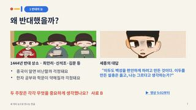
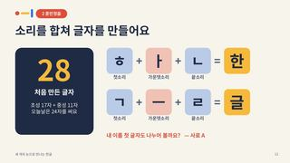
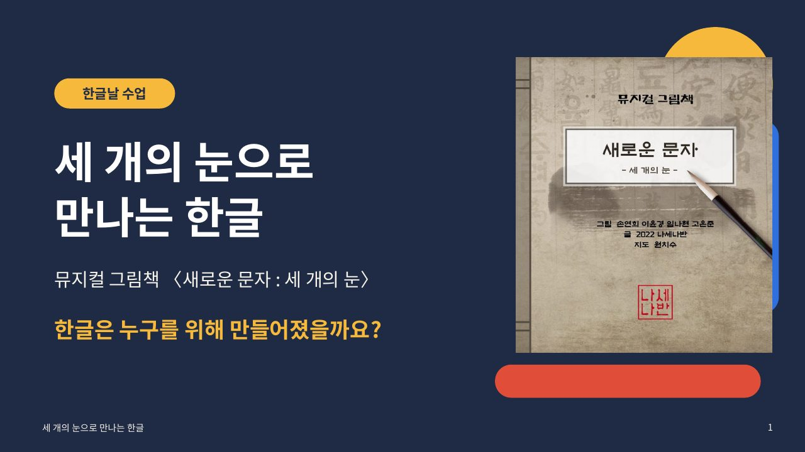

뮤지컬로 만나는 계기교육
뮤지컬 그림책
〈새로운 문자 : 세 개의 눈〉
한글은 누구를 위해
만들어졌을까요?
뮤지계는 뮤지컬을 활용한 계기교육이에요.
한글날의 의미를 뮤지컬 그림책의 이야기와 노래로 먼저 만나요.
영상 보기
세종 · 반대 · 찬성
글자를 만든 원리
세종대왕께 편지

무엇이 가장 답답할까요?

제 뜻을 펴지 못하는 백성을 위해
누구나 읽고 쓸 수 있는 글자를!

중국이 알면 비난하지 않을까,
한자 공부와 학문이 약해질까 걱정돼요.

새 글자의 좋은 점을
어떻게 널리 알릴까요?
세 사람은 각각 무엇을 중요하게 생각했을까요?
새 문자 28자를 만들어요
『세종실록』 세종 25년 12월 기사반대 상소와 세종의 대답
『세종실록』 세종 26년 2월 20일 기사해례본 완성 · 반포
『훈민정음』 해례본 · 『세종실록』 세종 28년 9월 기사한글날 10월 9일은 해례본에 적힌 날짜(음력 9월 상순)를 오늘의 달력으로 바꾼 날이에요.

○○○ 드림
생각 열기 → 세 개의 눈 →
훈민정음 → 오늘의 한글
웹에서 바로 넘겨 볼 수도 있어요



1 세 개의 눈
2 기록일까, 상상일까?
3 세종대왕께 보내는 편지
왜냐하면 …… 수업 전과 달라진 생각 한 가지를 나눠요.
한글은 누구를 위해 만들어졌을까요?
수업 자료 · hangeulday.chichiboo.link
#뮤지계 #한글날 #계기교육 #뮤지컬그림책 #세개의눈